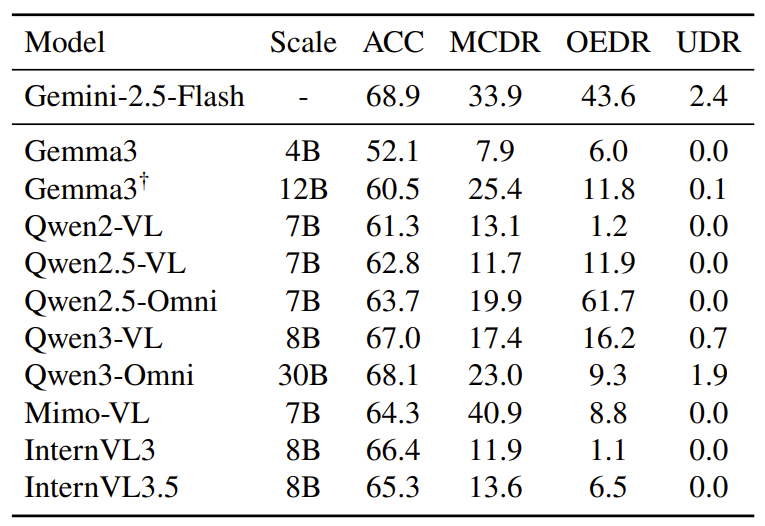
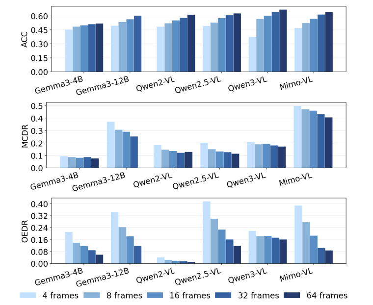
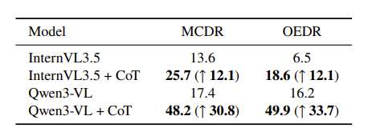

← Back to homepage
When No Answer Is Correct: Diagnosing Absent Answer Detection for MLLMs in Video Understanding
Yiheng Wang, Yueqian Lin, Lichen Zhu, Yudong Liu,
Hai "Helen" Li, Yiran Chen
Under Review, 2026 · CEI Lab, Duke University
[arXiv]
[Lab]
Background & Motivation
...
 Core idea: with the correct option removed, a reliable model should reject all candidates and propose its own answer.
Core idea: with the correct option removed, a reliable model should reject all candidates and propose its own answer.

Absent answer detection performance across models and settings.
...

As more frames are sampled, models select wrong answers with higher confidence.

Chain-of-thought prompting partly recovers the expected detection behavior.